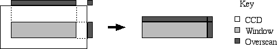

Displays the current status of the Seaver Prototype Imaging camera (SPIcam) and allows you to change the configuration. Normally only the most common status is displayed and the configuration controls are hidden. Various buttons show additional information. Information is displayed in the order light takes going through the instrument (except that the shutter is just behind the mask).
CCD coordinates are always binned. 1,1 is the lower left pixel and 2048,1028 is the upper right pixel when binned 1x1.
Pushing the "Show Config" button displays configuration controls (each to the right of its corresponding item of status).
Basic items (always shown) are as follows:
Pushing the Show CCD button shows the following image-specific items.

Below the items is a status bar that shows help and the state of the currently executing configuration command.
The buttons along the bottom are as follows:
The following are only available if the configuration controls are showing: